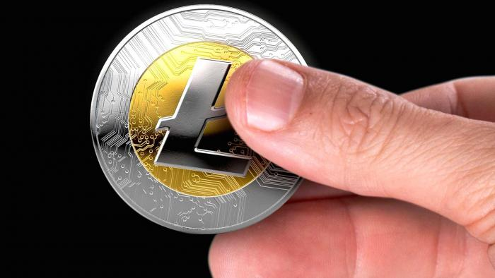

Enquanto muitos chamam o Bitcoin de ouro digital, o Litecoin foi descrito como a prata digital. Foi criado em 2011 pelo ex-funcionário do Google Charlie Lee e é considerado como uma alternativa ao bitcoin. Lee buscou reduzir o tempo necessário para confirmar novas transações e ajustar a forma como o bitcoin estava sendo minerado para garantir que qualquer pessoa pudesse participar do processo. O Litecoin também é projetado para produzir mais moedas - tem um limite de 84 milhões unidades, contra 21 milhões do bitcoin. Cerca de 54 milhões de moedas estão atualmente em circulação.
Tem características muito parecidas com o do bitcoin, mas com a capacidade de lidar com um maior volume de transações. Devido à geração de blocos mais frequente, a rede suporta mais transações sem necessidade de modificar o software no futuro. Como resultado, os comerciantes obtêm tempos de confirmação mais rápidos.